图像语义分割和目标检测相关模型复现手记¶
📖 阅读信息
阅读时间约 57 分钟 | 约 6436 字 | 约 59 个公式 | 约 2069 行代码
语义分割¶
语义分割的难点在于输出到和原图分辨率一致的特征图。因此不管是 FCN, U-Net 还是 Deeplab 等网络，关键点主要在于下采样和上采样的信息流动。一方面，我们需要利用下采样来获取特征图进行分割分类，这要求下采样过程能够高效提取信息；另一方面，我们还需要对下采样之后的结果进行解码，这又要求下采样不能丢弃太多信息，同时还需要引入编码器的中间结果来提供额外的信息。为此便有了跳跃连接、空洞卷积等核心操作。
虽然都是某种意义上的“生成模型”，这一部分的模型就没有 VAE 等模型那样强的数学，而是偏重于工程实现。
本文对语义分割主要介绍 FCN、U-Net 等。
FCN¶
架构¶
（其实我本来想直接上 U-Net 的，因为我一开始读 FCN 文章的时候就对这个架构有两个疑点，结果发现 U-Net 都能解决……）
本文主要复现的是 FCN-8s。它的前半截编码器部分是 VGG-16，于是我们又可以快乐地使用 ImageNet 预训练权重了。先回顾一下 VGG-16 的结构：
%%{init: {'theme': 'dark', 'themeVariables': { 'darkMode': true, 'primaryColor': '#1e1e2e', 'edgeLabelBackground':'#313244', 'tertiaryColor': '#181825'}}}%%
graph LR
%% Styling definitions
classDef box fill:#313244,stroke:#cdd6f4,stroke-width:2px,color:#cdd6f4,radius:8px;
classDef input fill:#585b70,stroke:#89b4fa,stroke-width:2px,color:#cdd6f4;
classDef output fill:#313244,stroke:#f38ba8,stroke-width:2px,color:#cdd6f4;
classDef result fill:#45475a,stroke:#a6e3a1,stroke-width:2px,color:#cdd6f4;
classDef conv fill:#313244,stroke:#74c7ec,stroke-width:2px,color:#cdd6f4;
%% Input Layer
subgraph Input["Input"]
A[("3 @ 224×224")]
end
class Input input;
%% Initial Convolution
subgraph InitConv["Convolution Block 1"]
B["Conv2d <br> 3x64 x 3×3"]
C["Conv2d <br> 64x64 x 3×3"]
D["Maxpool 1<br>stride = 2"]
end
A --> B
B --> C --> D
class InitConv conv;
%% Layer 1 (2× BasicBlock without downsample)
subgraph Layer1["Convolution Block 2"]
F["Conv2d <br> 64x128 x 3×3"]
GG["Conv2d <br> 128x128 x 3×3"]
G["Maxpool 2<br>stride = 2"]
end
D --> |64 @ 112×112| F
F --> GG --> G
class Layer1 conv;
%% Layer 2 (2× BasicBlock with downsample in first block)
subgraph Layer2["Convolution Block 3"]
H["Conv2d <br> 128x256 x 3×3"]
I["Conv2d <br> 256x256 x 3×3"]
J["Maxpool 3<br>stride = 2"]
end
G --> |128 @ 56×56| H
H --> I --> J
class Layer2 conv;
%% Layer 3 (2× BasicBlock with downsample in first block)
subgraph Layer3["Convolution Block 4"]
K["Conv2d <br> 256x512 x 3×3"]
L["Conv2d <br> 512x512 x 3×3"]
M["Maxpool 4<br>stride = 2"]
end
J --> |256 @ 28×28| K
K --> L --> M
class Layer3 conv;
%% Layer 4 (2× BasicBlock with downsample in first block)
subgraph Layer4["Convolution Block 5"]
N["Conv2d <br> 512x512 x 3×3"]
O["Conv2d <br> 512x512 x 3×3"]
P["Maxpool 5<br>stride = 2"]
end
M --> |512 @ 14×14| N
N --> O --> P
class Layer4 conv;
%% Global Pooling and FC
subgraph PoolFC["GAP & Classfiaction"]
Q["Flatten <br> or GAP"]
S["Linear Layers"]
end
P --> |512 @ 7x7| Q --> S
class PoolFC box;
%% Output Layer
subgraph Output["output"]
T[("1000")]
end
S --> T
class Output output;
%% Styling
style A stroke-dasharray: 5 5
style T stroke:#a6e3a1,stroke-width:3px这里我们取到 Maxpool 5 之前的地方就够了，这样 VGG-16 的输出就是一张 512@7x7 的低分辨率特征图。然后 FCN 在这里就出现了几个变体（或者说一个演进的过程）：
首先考虑把这个特征图直接上采样到 224x224，我们肯定不能直接用什么线性插值、立方插值、Lanczos 插值等算法，因为它只是插值而不引入新信息。这就要祭出我们在 DC-GAN 以及 SRCNN 等生成式模型里面见到的 ConvTranspose2d 了。之前在分类模型下面没有细讲，这里简要介绍一下：ConvTranspose2d 的原理是在原有像素的四周均匀插 0 得到和目标大小一致的大图，然后再在这个大图上面做正常卷积。
于是我们通过步长为 32 的转置卷积一次性将 512@7x7 的特征图上采样到 n@224x224，得到我们的目标图像。这便是 FCN-32s。这里的 32 就是转置卷积的步长，s 就是 stride 的意思。
很显然，这个 512@7x7 的特征图剩下的信息相比于原图已经很少了，而我们的目标是要实现像素级的分割，为此，FCN 提出了跳跃连接的概念：既然编码器像一个“漏斗”一样去压榨特征，那么我取压榨之前具有更丰富信息的特征图，和我后面转置卷积上采样得到的特征图一融合，不就行了嘛。这便是 FCN 提出的跳跃连接思想。（其实和 ResNet 的残差连接有点像）
这样，我们就不一次性暴力恢复，而是先利用步长为 2 的转置卷积将 512@7x7 的特征图上采样到 n@14x14，其中 n 是类别数，也就是和 Maxpool 4 的输出尺寸一致。这样，前一个阶段的信息经过一个 1x1 卷积合并通道之后，就可以直接融合了。而这引发了我对于 FCN 架构的第一个疑点——FCN 的论文说是将两个特征图相加。但是我认为在通道维直接拼接，可能效果更好，因为对于特征图相加之后进行的卷积操作 C1 而言，我们总能设计一个卷积核使得拼接特征图再进行卷积操作 C2 的输出和相加后进行 C1 的输出完全一样，这意味着拼接再卷积作为一个张量到张量的映射集合，其“维度”是大于相加再卷积的，因而有能力承载更多的特征。不过，我们先按照原论文来，进行相加操作，得到 n@14x14 的特征图。最后，我们实施一次步长为 16 的转置卷积，上采样到 n@224x224，由于这一步步长为 16，所以叫 FCN-16s。
这样，FCN-8s 的意思就很简单了。我们对 n@14x14 的特征图进行一次步长为 2 的转置卷积，再同 Maxpool 3 的输出特征图相加得到 n@28x28 的特征图，再实施一次步长为 8 的转置卷积，上采样到 n@224x224 即可。
FCN 的论文只做到 8s，为什么不接着往后面做呢？这就是我的第二个疑点。如果逐层应用跳跃连接，也就是 n@28x28 到 n@56x56 到 n@112x112 再到 n@224x224，每一步都以拼接的方式实现跳跃连接，那么我们几乎就发明了 U-Net。
下面是 FCN-8s 的架构：
%%{init: {'theme': 'dark', 'themeVariables': { 'darkMode': true, 'primaryColor': '#1e1e2e', 'edgeLabelBackground':'#313244', 'tertiaryColor': '#181825'}}}%%
graph LR
%% Styling definitions
classDef box fill:#313244,stroke:#cdd6f4,stroke-width:2px,color:#cdd6f4,radius:8px;
classDef input fill:#585b70,stroke:#89b4fa,stroke-width:2px,color:#cdd6f4;
classDef output fill:#313244,stroke:#f38ba8,stroke-width:2px,color:#cdd6f4;
classDef result fill:#45475a,stroke:#a6e3a1,stroke-width:2px,color:#cdd6f4;
classDef conv fill:#313244,stroke:#74c7ec,stroke-width:2px,color:#cdd6f4;
classDef skip fill:#313244,stroke:#cba6f7,stroke-width:2px,color:#cdd6f4;
classDef upsample fill:#313244,stroke:#f5c2e7,stroke-width:2px,color:#cdd6f4;
%% Input Layer
subgraph Input["Input"]
A[("3 @ 224×224")]
end
class Input input;
%% VGG-16 Backbone (until pool5)
subgraph Backbone["VGG-16 Backbone"]
%% Block 1
subgraph Block1["Block 1"]
B["Conv 3x64<br>3×3"]
C["Conv 64x64<br>3×3"]
D["MaxPool<br>2×2 stride=2"]
end
%% Block 2
subgraph Block2["Block 2"]
E["Conv 64x128<br>3×3"]
F["Conv 128x128<br>3×3"]
G["MaxPool<br>2×2 stride=2"]
end
%% Block 3
subgraph Block3["Block 3"]
H["Conv 128x256<br>3×3"]
I["Conv 256x256<br>3×3"]
J["Conv 256x256<br>3×3"]
K["MaxPool<br>2×2 stride=2<br>(pool3)"]
end
%% Block 4
subgraph Block4["Block 4"]
L["Conv 256x512<br>3×3"]
M["Conv 512x512<br>3×3"]
N["Conv 512x512<br>3×3"]
O["MaxPool<br>2×2 stride=2<br>(pool4)"]
end
%% Block 5
subgraph Block5["Block 5"]
P["Conv 512x512<br>3×3"]
Q["Conv 512x512<br>3×3"]
R["Conv 512x512<br>3×3"]
S["MaxPool<br>2×2 stride=2<br>(pool5)"]
end
end
A --> B
B --> C --> D
D --> E
E --> F --> G
G --> H
H --> I --> J --> K
K --> L
L --> M --> N --> O
O --> P
P --> Q --> R --> S
class Backbone conv;
class Block1,Block2,Block3,Block4,Block5 box;
%% FCN-8s Specific Layers
subgraph FCN["FCN-8s Head"]
%% 1x1 Convs to reduce channels to num_classes
T["1×1 Conv<br>512→n"]
U["1×1 Conv<br>512→n"]
V["1×1 Conv<br>256→n"]
%% 2x Upsampling
W["2x Upsample<br>transposed conv"]
X["2x Upsample<br>transposed conv"]
%% Skip connections and addition
Y["Add<br>pool4 + 2x(pool5)"]
Z["Add<br>pool3 + 2x(combined)"]
%% Final 8x Upsampling
AA["8x Upsample<br>transposed conv"]
end
S --> T
O --> U
K --> V
T --> W
W --> Y
U --> Y
Y --> X
X --> Z
V --> Z
Z --> AA
class FCN skip;
class T,U,V conv;
class W,X,AA upsample;
class Y,Z result;
%% Output Layer
subgraph Output["Output"]
AB[("n @ 224×224<br>(Segmentation Mask)")]
end
AA --> AB
class Output output;
%% Styling
style A stroke-dasharray: 5 5
style AB stroke:#a6e3a1,stroke-width:3px
%% Skip connection annotations
linkStyle 15 stroke:#cba6f7,stroke-width:2px,stroke-dasharray: 5 5;
linkStyle 16 stroke:#cba6f7,stroke-width:2px,stroke-dasharray: 5 5;指标¶
先前的图像分类任务里面，我们基本上没有去衡量除了准确率和损失之外的其他指标，但是语义分割和目标检测这一块，我们就不仅要关注类别对不对，更要关注分割/检测是否到位。
让我们来回顾一下概率论课程中的参数推断，里面提到两种错误：拒真和取伪（或者叫假阳假阴或者第一类错误第二类错误什么的），如果我们把这两种错误的频数和两种正确的频数放到一起，就得到了混淆矩阵：
| 预测为真 | 预测为假 | 总和 | |
|---|---|---|---|
| 实际为真 | 真阳性 TP | 假阴性 FN | 真样本数 T |
| 实际为假 | 假阳性 FP | 真阴性 TN | 假样本数 F |
| 总和 | 阳性数 P | 阴性数 N | 总数 S |
那么我们就可以以此来评估模型性能了：
第一个是准确率即预测正确占总数的比例。第二个是精准率，越高说明假阴性/假阳性的占比越低。最后一个是召回率，可以理解成在预测正确的情况下，模型有多大意愿给出阴性/阳性结果。在语义分割的语境下，我们在单张图片的像素意义上计算这些指标，也就是说我们可以得到像素准确率 PA。
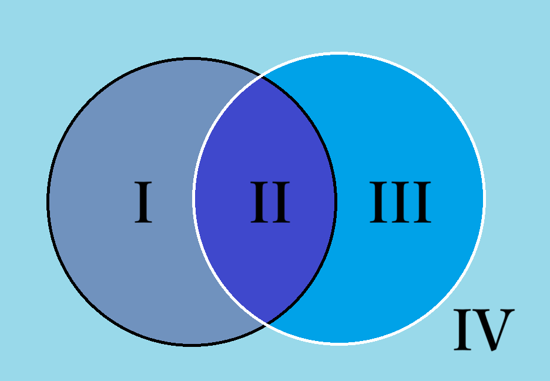
如图，假设黑圈是 ground truth 而白圈是 prediction，那么以上三个率就能可视化了。
如果做的是像 Pascal VOC 这样的多类别语义分割，我们给每个类别都计算 PA，然后求平均，就得到一个总的计算准确率的指标：平均类别像素准确率 mPA。
另一方面，我们其实希望白圈和黑圈尽可能重合，其实就是相交得更多，不属于相交的部分更少。为此，我们可以引入一个指标来衡量：交并比 IoU，也就是 II 区域的面积除以 I、II 和 III 区域的面积之和。
同样的，我们可以计算类别平均交并比 mIoU。
下面的代码就实现了基于混淆矩阵计算 PA 和 mIoU。
FCN 的损失函数当简单：其实我们等于是对一个和原图尺寸一致的像素阵列做独立的分类，那么和分类任务一样，直接沿用交叉熵损失即可！
实现细节¶
这里的细节主要是来讲 FCN-8s 这个类的具体实现。
可以看到除开之前提到的整体架构以外，代码还有一些小细节。
首先是反卷积的双线性插值初始化。这一部分代码如下：
这里关键是 filt 的计算，本质上就是卷积核内部计算对应的行到边界的归一化曼哈顿距离乘以对应的列到边界的归一化曼哈顿距离。对于从小图到大图的转置卷积而言，大图里面两个源于小图的像素之间的像素，就可以根据到这两个像素的曼哈顿距离作为比例来混合得到。也就是说即使我们还没有从网络里面学到任何知识，这个卷积核至少还可以不破坏原有信息而直接插值放大。同时本来 FCN 的卷积核就需要对特征图进行放大，这无疑是相比随机初始化更高效的初始化方法。
下面是完整的训练代码，关于数据加载和增强的大量工程性代码就不细讲了。不过，代码里的数据增强还是比较有效。
FCN-8s 完整训练代码
1 2 3 4 5 6 7 8 9 10 11 12 13 14 15 16 17 18 19 20 21 22 23 24 25 26 27 28 29 30 31 32 33 34 35 36 37 38 39 40 41 42 43 44 45 46 47 48 49 50 51 52 53 54 55 56 57 58 59 60 61 62 63 64 65 66 67 68 69 70 71 72 73 74 75 76 77 78 79 80 81 82 83 84 85 86 87 88 89 90 91 92 93 94 95 96 97 98 99 100 101 102 103 104 105 106 107 108 109 110 111 112 113 114 115 116 117 118 119 120 121 122 123 124 125 126 127 128 129 130 131 132 133 134 135 136 137 138 139 140 141 142 143 144 145 146 147 148 149 150 151 152 153 154 155 156 157 158 159 160 161 162 163 164 165 166 167 168 169 170 171 172 173 174 175 176 177 178 179 180 181 182 183 184 185 186 187 188 189 190 191 192 193 194 195 196 197 198 199 200 201 202 203 204 205 206 207 208 209 210 211 212 213 214 215 216 217 218 219 220 221 222 223 224 225 226 227 228 229 230 231 232 233 234 235 236 237 238 239 240 241 242 243 244 245 246 247 248 249 250 251 252 253 254 255 256 257 258 259 260 261 262 263 264 265 266 267 268 269 270 271 272 273 274 275 276 277 278 279 280 281 282 283 284 285 286 287 288 289 290 291 292 293 294 295 296 297 298 299 300 301 302 303 304 305 306 307 308 309 310 311 312 313 314 315 316 317 318 319 320 321 322 323 324 325 326 327 328 329 330 331 332 333 334 335 336 337 338 339 340 341 342 343 344 345 346 347 348 349 350 351 352 353 354 355 356 357 358 359 360 361 362 363 364 365 366 367 368 369 370 371 372 373 374 375 376 377 378 379 380 381 382 383 384 385 386 387 388 389 390 391 392 393 394 395 396 397 398 399 400 401 402 403 404 405 406 407 408 409 410 411 412 413 414 415 416 417 418 419 420 421 422 423 424 425 426 427 428 429 430 431 432 433 434 435 436 437 438 439 440 441 442 443 444 445 446 447 448 449 450 451 452 453 454 455 456 457 458 459 460 461 462 463 464 465 466 467 468 469 470 471 472 473 474 475 476 477 478 479 480 481 482 483 484 485 486 487 488 489 490 491 492 493 494 495 496 497 498 499 500 501 502 503 504 505 506 507 508 509 510 511 512 513 514 515 516 517 518 519 520 521 522 523 524 525 526 527 528 529 530 531 532 533 534 535 536 537 538 539 540 541 542 543 544 545 546 547 548 549 550 551 552 | |
训练结果¶
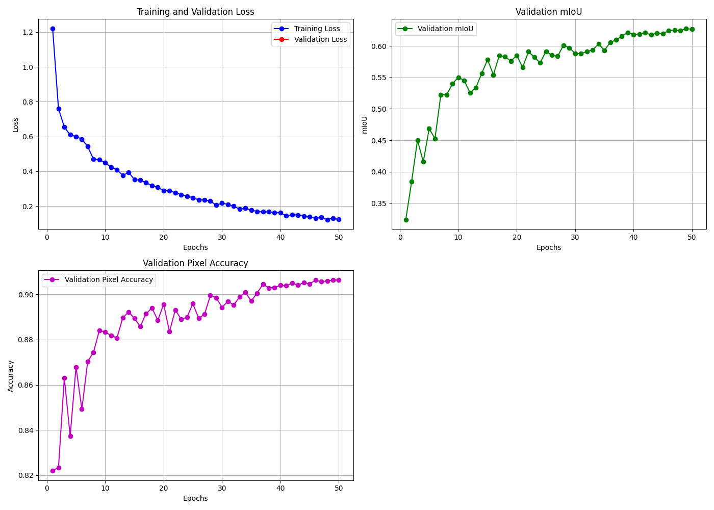
在 Pascal VOC 07+12 上训练 50 个 Epoch，总用时 7796.3s，mIoU 达到 0.6277，像素准确率达到 0.9065，已经超过了原论文的指标。
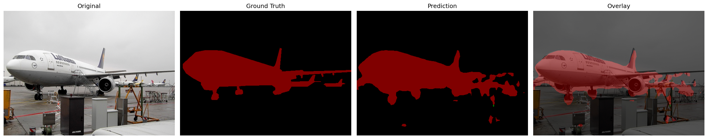
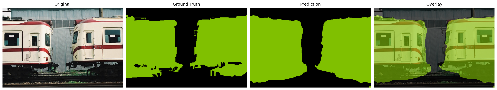
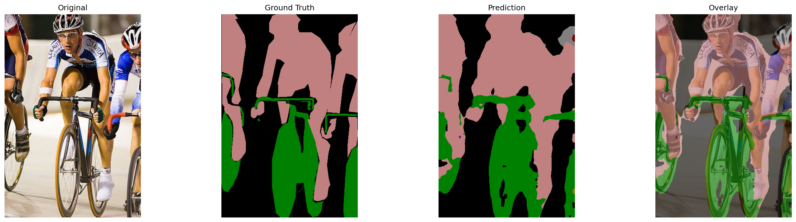
U-Net¶
原理¶
我们实践刚刚在 FCN-8s 里面提到的更改，也就是把网络结构改对称，并且跳跃连接由相加再在通道维拼接，最后加数据增强即可。
其实从 FCN 到 U-Net，有点类似于从 ResNet 到 DenseNet。
1 2 3 4 5 6 7 8 9 10 11 12 13 14 15 16 17 18 19 20 21 22 23 24 25 26 27 28 29 30 31 32 33 34 35 36 37 38 39 40 41 42 43 44 45 46 47 48 49 50 51 52 53 54 55 56 57 58 59 60 61 62 63 64 65 66 67 68 69 70 71 72 73 74 75 76 77 78 79 80 81 82 83 84 85 86 87 88 89 90 91 92 93 94 95 96 97 98 99 100 101 102 103 104 105 106 107 108 109 110 111 112 113 114 115 116 117 118 119 120 121 122 | |
训练代码¶
U-Net 的训练代码
1 2 3 4 5 6 7 8 9 10 11 12 13 14 15 16 17 18 19 20 21 22 23 24 25 26 27 28 29 30 31 32 33 34 35 36 37 38 39 40 41 42 43 44 45 46 47 48 49 50 51 52 53 54 55 56 57 58 59 60 61 62 63 64 65 66 67 68 69 70 71 72 73 74 75 76 77 78 79 80 81 82 83 84 85 86 87 88 89 90 91 92 93 94 95 96 97 98 99 100 101 102 103 104 105 106 107 108 109 110 111 112 113 114 115 116 117 118 119 120 121 122 123 124 125 126 127 128 129 130 131 132 133 134 135 136 137 138 139 140 141 142 143 144 145 146 147 148 149 150 151 152 153 154 155 156 157 158 159 160 161 162 163 164 165 166 167 168 169 170 171 172 173 174 175 176 177 178 179 180 181 182 183 184 185 186 187 188 189 190 191 192 193 194 195 196 197 198 199 200 201 202 203 204 205 206 207 208 209 210 211 212 213 214 215 216 217 218 219 220 221 222 223 224 225 226 227 228 229 230 231 232 233 234 235 236 237 238 239 240 241 242 243 244 245 246 247 248 249 250 251 252 253 254 255 256 257 258 259 260 261 262 263 264 265 266 267 268 269 270 271 272 273 274 275 276 277 278 279 280 281 282 283 284 285 286 287 288 289 290 291 292 293 294 295 296 297 298 299 300 301 302 303 304 305 306 307 308 309 310 311 312 313 314 315 316 317 318 319 320 321 322 323 324 325 326 327 328 329 330 331 332 333 334 335 336 337 338 339 340 341 342 343 344 345 346 347 348 349 350 351 352 353 354 355 356 357 358 359 360 361 362 363 364 365 366 367 368 369 370 371 372 373 374 375 376 377 378 379 380 381 382 383 384 385 386 387 388 389 390 391 392 393 394 395 396 397 398 399 400 401 402 403 404 405 406 407 408 409 410 411 412 413 414 415 416 417 418 419 420 421 422 423 424 425 426 427 428 429 430 431 432 433 434 435 436 437 438 439 440 441 442 443 444 445 446 447 448 449 450 451 452 453 454 455 456 457 458 459 460 461 462 463 464 465 466 467 468 469 470 471 472 473 474 475 476 477 478 479 480 481 482 483 484 485 486 487 488 489 490 491 492 493 494 495 496 497 498 499 500 501 502 503 504 505 506 507 508 509 510 511 512 513 514 515 516 517 518 519 520 521 522 523 524 525 526 527 528 529 530 531 532 533 534 535 536 537 538 539 540 541 542 543 544 545 546 547 548 549 550 551 552 553 554 555 556 557 558 559 560 561 562 563 564 565 566 567 568 569 570 571 572 573 574 575 576 577 578 579 580 581 582 583 584 585 586 587 588 589 590 591 592 593 594 595 596 597 598 599 600 601 602 603 604 605 | |
结果¶
在 Pascal VOC 07+12 上训练 80 个 Epoch，耗时 19332s，最后的 mIoU 为 0.5342。诶，您别瞧这 mIoU 还打不过 FCN-8s，那边可是用上了 VGG 预训练参数的大头——也就是 pool5 之后的两个线性层啊！
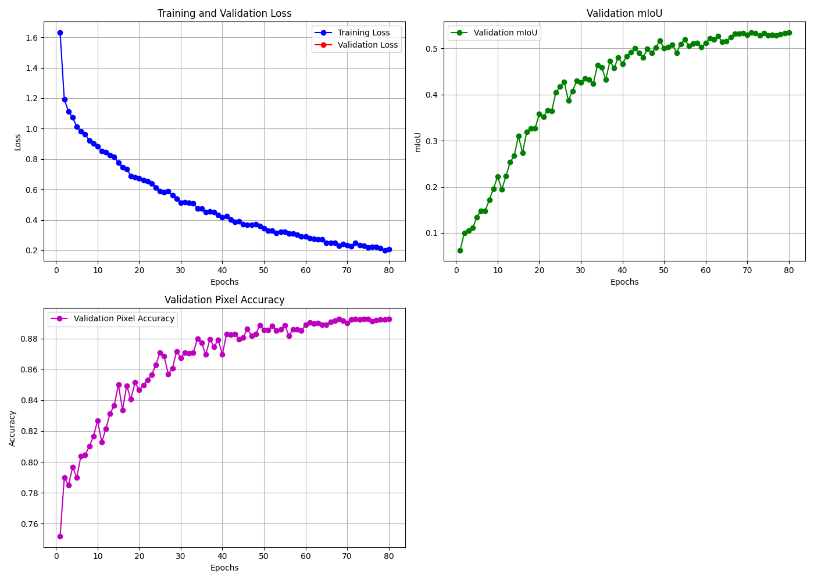
下面是几个样例图像：
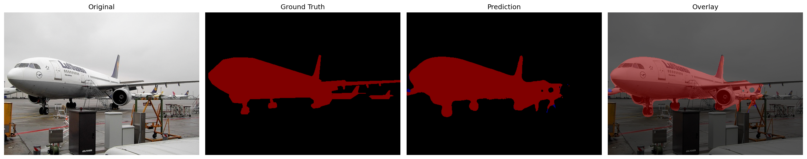
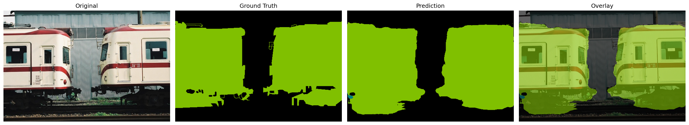
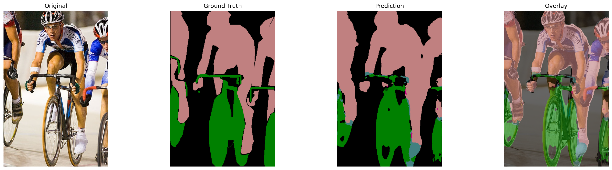
碎碎念¶
记得当时学数字逻辑的时候，老是有题目来考察多路选择器 MUX，也就是根据 n 个输入端高低电平，把它看作一个二进制数 x，从而激活第 x 个输出端。这种题目一般不会让多路选择器做自己的本职工作，而是利用自己可以进行从二进制编码到逻辑最小项的“译码”来干花活——比如搓一个全加器。
其实全卷积架构也是如此。单纯做语义分割，还是太限制它的发挥了。事实上它展示了一种像素级的编码器——解码器的通用架构，从而可以用在各种生成式任务上面。无论是 VAE 还是 DC-GAN，我们都在其中看到了反卷积的应用；而大名鼎鼎的 DDPM，其生成正是使用了 U-Net 架构。
目标检测¶
目标检测的的目的在于打目标框。如下图所示：
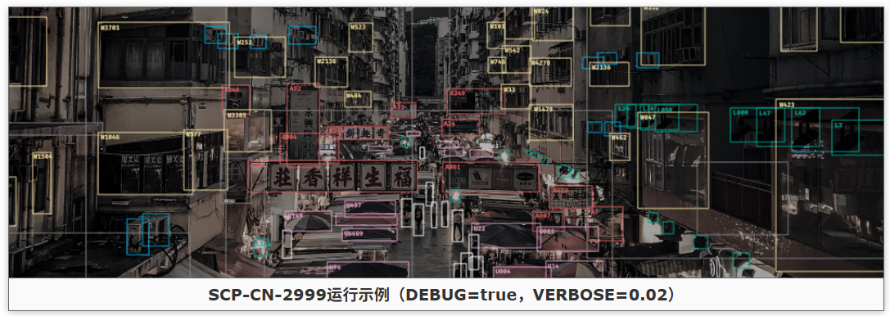
如何生成这一目标框呢？古早的理论 R-CNN 认为：我们已经有了强大的图像分类网络了，那么我们只需要每次选取图像的一部分丢给分类网络，再取预测概率最高的那个框即可。这样做确实很有道理，但是对于一个很大的图像，比如我的相机拍摄的 5424x3612 的下面这张图像：

如果还是用 R-CNN 的方法做，难点在于：已知 R-CNN 在 ImageNet 的 224x224 上面都要生成接近 2000 个框，那么考虑这个图切开成 224x224 的块，一共就要生成 780910 个框！假设每个框推理时间 1ms，且全部都能以批量 128 数据并行，仍然需要 6s 才能完成基础的推理，而且这还不包含后续的 NMS 等操作。在后面我们会看到，YOLO v1 把框的数量压缩到了 38265 个（按每个 cell 32px 算），也就是 R-CNN 的二十分之一。也就是说 0.3s 就可以出图，这就使得实时目标检测成为可能。
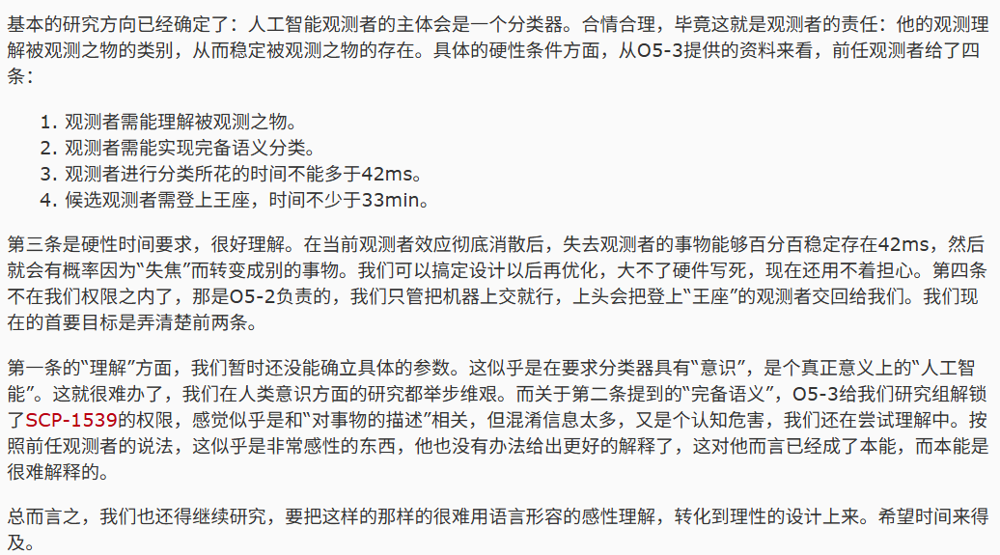
（番外：SCP-CN-2999 是我心目中的中分十佳文档之一。如果你厌烦了对人工智能的弗洛肯斯坦叙事，并认为那些人与人工智能合作共生的点子是阿西莫夫时代就玩烂了的东西，那么欢迎阅读这篇文档。）
本文对目标检测模型只介绍 YOLO 模型。
YOLO v1¶
模型架构¶
那么，YOLO 采用了什么方法来缩减目标框呢？不像 R-CNN 一样选择先学习目标框的位置分布再启发式地搜寻，YOLO 选择端到端的方式获得目标框。比如有一张 224x224 的 ImageNet 图像，我们首先可以划分一个 7x7 的网格，每个小格子的边长是 32px。对于这个 32x32 的小图像干什么呢？难道是像 R-CNN 一样直接分类吗？不然。
俗语有言，“管中窥豹，可见一斑”。我们考虑某一个物体的中心落入了这个格子里面，那么这个格子就很可能有一部分信息知道这个物体是什么。换句话说，对于这七七四十九个格子，我们让每一个格子都来看看落在格子里的是什么东西，也就是给出类别的预测概率。另一方面，一个格子的信息基本上也差不多能让我们知道这个物体大概的尺寸如何，比如说格子里面有个人脸，那么往下画一个6~8头身的框基本上就没错了。具体到底是几头身，模型不确定，那就六头身七头身八头身都试一下，多打几个框，总有一个能蒙对。
这里可能有一个误解（毕竟这种说明式的语言不甚精确），就是会以为我们只根据格子里面的东西来打框。但其实不是的，我们不是先给图像分块然后限制每一个格子的感受野只在这个格子里面。事实上我们是基于图像整体的信息，最后生成 S x S 个格子和每个格子的 B 个框。也就是说推算框的大小以及该放进哪个格子都是骨干网应该干的活，它的感受野是整张图像。如果还是觉得含糊，请接着读。
用形式化的语言来说，也就是每个格子负责预测 \(B\) 个框，每个框有 \(x,y,w,h\) 四个参数，对应框的中心点相对图像左上角的坐标 \(x,y\) 与框的尺寸 \(w,h\)，这四个参数全部根据图像尺寸归一化到 \([0,1]\) 之间方便反向传播。同时，框打的准不准，还需要一个置信度 \(c\) 来衡量。具体解释在下一段。同时 YOLO v1 假定一个格子里面只有一个物体，所以还要给出物体所属的各类别的概率（下一段再解释）。以在 Pascal VOC 上训练的 YOLO v1 来说，一张图片画成 \(S\times S\) 也就是 7x7 的网格，每个网格负责对格子里面的内容打框。一个格子打两个框，还负责输出 20 个类别，那么一个格子的输出就是 \(2\times 5+20=30\) 维的向量，而整个网络的输出就是一个 (7,7,30) 的张量。
刚刚提到打框使用的是置信度。我们知道打框无非就是要打的准，不仅位置要准，识别也要准。位置准不准很简单，只需要用真实框和预测框的 IoU 就可以了。而由于一般的网络只能识别类别是什么而不能识别类别是否存在（之前看到某同学给一个 MNIST 分类器喂了一个五角星，然后模型煞有介事地给出了类别 8 的高达 99% 的分类概率），于是我们还需要引入一个判断是否存在待分类对象的概率 \(P(\mathrm{Obj})\)，乘起来就得到置信度了：\(c=P(\mathrm{Obj})\times \mathrm{IoU}\)。这代表模型对得到的这个框的信心。也就是框里面有物体并且预测和真实越接近，这个框就越可信。当然这只是我们的一厢情愿，具体的置信度还需要反向传播来算出来。
而类别概率其实是一个条件概率，是在这个格子里面有对象的条件下，对对象 \(i\) 的分类概率 \(P(\mathrm{Class}_i|\mathrm{Obj})\)。对于每一个框，我们把它的置信度乘上分类概率的向量，可以得到一个得分：\(s=P(\mathrm{Class}_i|\mathrm{Obj})\times P(\mathrm{Obj})\times \mathrm{IoU}=P(\mathrm{Class}_i\mathrm{\ with\ Obj\ exists})\times \mathrm{IoU}\)。这个得分代表了对于每一个类别，模型得到的框的质量。理想情况下对于背景格子而言，\(s\) 应该是全零向量；而对于中心落在这个格子里面的真实的框而言，\(s\) 应该是一个 one-hot 向量，其中 1 对应的就是那个真实框的类别。这样在推理时，对于模型得到的诸多框而言，我们只需要根据得分排序，就可以筛选出最好的那些框了。
“每个格子只预测一个类别”固然简化了模型，但也很有可能带来信息的损失，具体表现为，YOLO v1 在小物体的预测上力不从心。假设两个小物体都包在一个格子里面，那这个格子该预测什么呢？而如果我们加细格子，则会带来平方级的复杂度增长。
损失函数¶
下面我们需要指标来评估这个模型打框的质量如何，这样才能让模型反向传播实现进化。
首先我们来看损失函数。我们来回顾一下打框的几个要素：首先定中心点坐标，然后算框的尺寸，给出置信度，最后一部分是概率。其中每一个要素都要兼顾。
首先我们要确定对于每一个格子而言，它的框在预测什么。YOLO v1 为了简化，首先对于每个格子先筛一遍，找到那个中心点落在这个格子里面的真实框(a ground truth)，如果有真实框（原论文叫这个物体出现在格子里面），我们用 \(1_{i}^\mathrm{obj}\) 来指示格子 \(i\) 有物体出现在这个格子里面。
下面，既然我们已经有了一个真实框，就可以选格子里面和它 IoU 最大的那个预测框(the predictor responsible for the ground truth)进行配对，我们把那个真实框叫做“目标框”(the ground truth)（原论文叫做这个预测框负责这个真实框，也就是负责它的目标框）。
我们用指标 \(1_{ij}^\mathrm{obj}\) 表示第 \(i\) 个格子的第 \(j\) 个框存在一个对应的目标框，这就说明这个框是和它格子的真实框 IoU 最大的那个框。如果不存在目标框，就使用 \(1_{ij}^\mathrm{noobj}\) 来指示，说明它的 IoU 不是最大的，或者它对应的格子根本没有真实框。下面我们就可以计算框的损失：
对于第 \(i\) 个格子的第 \(j\) 个框，其中心点的误差，我们可以直接用预测框中心点到目标框中心点距离模长的平方衡量：
而尺寸上的误差如果仍然是直接相减再求平方的算法，会导致相同的误差对大框的惩罚不合理地大于小框，因为从观感和尺度而言，同样是 10px 的差值，对于大框而言无足轻重，对于小框却是很大的偏移。也就是说我们需要把对大框的衡量尺度调小而对小框的衡量尺度调大。其实 \(x^{1/p}(p>1)\) 就能做到这个映射，在论文里面，取到的是 \(p=2\)。现在就可以类似地写出尺寸的损失了：
下一部分是置信度的损失。我们知道对于每一个框，理想的置信度如下：
这里的置信度损失的关键是要分辨正确的目标和背景，如果前面两项损失都很低，IoU 自然相当高，所以这里的关键就是，对于预测框而言，我们需要让它相对对应的目标框的置信度尽量高（对应目标，是正样本），而如果没有对应的目标框，则置信度尽量低（对应背景或者非最优的预测框，是负样本）。
正样本和负样本的损失计算就是把刚刚的式子拆开，仍旧使用 MSE。刚刚提到我们需要让不同的预测框置信度有高低的分配，我们可以直接让需要拉高置信度的，拉到 \(1\)，需要压低的，压到 \(0\)：
最后就是分类误差了。由于分类是由格子进行的，因此这一部分是格子的损失。回忆一下，我们之前使用 \(1_{i}^\mathrm{obj}\) 来指示某个格子有对应框的中心点落到格子里面。原论文还是用的 MSE，不过我觉得分类任务用交叉熵显然更合适：
最后把他们加权起来：
这个加权也是有说法的。我们的优先级是打框打到位，要不然后面的置信度这些都是扯淡，因此要给 \(\lambda_{\mathrm{coord}}\) 一个大权重，论文里面给到了 \(5\)，而且由于一个图背景肯定多于目标，因此总的 \(\mathcal{L}_{\mathrm{N}}\) 肯定相当高，导致模型倾向于压置信分，把所有的框都预测成背景，因此我们需要控制这部分损失，给 \(\lambda_{\mathrm{noobj}}\) 一个小权重，论文里面给到 \(0.5\)。
最后总结一下计算流程：
对于拿到的图片，先过网络推理得到 (S, S, B*5+C) 的预测张量。然后扫一遍所有格子：
- 如果有个真实框 T 的中心落在格子 \(i\) 里面了：
- 此时 \(1_i^{\mathrm{obj}}=1\)
- 从格子 \(i\) 的 \(B\) 个框里面找到和 T 的 IoU 最大的框 \(j\)，此时 \(1_{ij}^{\mathrm{obj}}=1\)
- 对于这个框，计算 \(\mathcal{L}_1=\lambda_{\mathrm{coord}}(\mathcal{L}_\mathrm{center}+\mathcal{L}_\mathrm{size})+\mathcal{L}_{\mathrm{P}}\)
- 对于剩下的 \(B-1\) 个框，计算 \(\mathcal{L}_2=\lambda_{\mathrm{noobj}}\sum^{B-1}\mathcal{L}_{\mathrm{N}}\)
- 对于这个格子的类别概率向量 \(p_i\)，和 T 的类别做交叉熵，即计算 \(\mathcal{L}_{\mathrm{class}}=\sum_i ^{S^2}CE(p_i||\mathrm{one\_hot}_i^{\mathrm{T}})\)
- 格子的总损失 \(\mathcal{L}_{\mathrm{objcell}}=\mathcal{L}_1+\mathcal{L}_2+\mathcal{L}_{\mathrm{class}}\)
- 如果没有：
- 此时 \(1_i^{\mathrm{obj}}=0\)
- 只需对所有框求和： \(\mathcal{L}_{\mathrm{noobjcell}}=\mathcal{L}_2=\lambda_{\mathrm{noobj}}\sum^{B}\mathcal{L}_{\mathrm{N}}\)
最后可以得到整个图片的损失：\(\mathcal{L}_{\mathrm{YOLO}}=\sum\mathcal{L}_{\mathrm{objcell}}+\sum\mathcal{L}_{\mathrm{noobjcell}}\)。
如果你是像我一样从过程式的 C/C++ 开始接触程序设计语言的，大概会觉得这就是一个 for-if 就能解决的事。但是如果你读了下面的损失函数代码就会发现完全不是这样做的，而是一种接近函数式的思想。
如果想感受这种范式转移 (Paradigm Shift) 带来的震撼，强烈推荐阅读下面计算损失使用的代码。配合这首 Paradigm Shift 食用更佳哦~
最后值得一提的是，“选取IoU最大的框”这个操作似乎因为涉及到 argmax 操作而不可导，但是由于我们对不同的情况分配了不同的损失，因此我们事实上执行的操作是对最大框利用 \(\mathcal{L}_1\) 回传梯度而对其他框利用 \(\mathcal{L}_{\mathrm{N}}\) 回传梯度，也就是通过条件判断来构建不同的损失路径，这样整个网络就完全可导了。这一点写成代码也是有说法的，请看 VCR：
网络结构¶
YOLO v1 使用自研架构 Darknet 来实现打框。他们在 ImageNet 上面预训练了特征提取器，然后替换分类头改为输出 (S, S, B*5+C) 的预测张量，再在 VOC 07+12 上面训练。由于 Darknet 的预训练权重没有公开（只公开了在目标检测数据上面微调好的），我们在这里使用 torchvision 开源的 ResNet-18 在 ImageNet 上面的预训练权重作为骨干网。当然这个网络的参数量完全比不过 Darknet。
mAP¶
我们知道一个格子可以有多个框，不同的框有不同的置信度。对于一个给定的 IoU 阈值，比如说 0.5，我们可以通过选择置信度阈值来筛选框，也就是说我们可以把同时符合下面三个条件的框视作TP而这个格子打的其他框视作FP：预测类别和真实类别一致、相对真实框的 IoU 满足 IoU 阈值以及满足置信度阈值。然后我们就可以得到混淆矩阵，从而得到 P-R 曲线也就是精准率-召回率曲线。
我们按等间隔采样 11 个召回率（事实上真实 P-R 分布不可能等间隔，但是我们插值即可），计算对应精确率的平均，就得到了平均精确率也就是 AP，由于我们设置的 IoU 阈值是 0.5，所以写作 AP@0.5，同样的对类别做平均就得到了我们主要的评价指标 mAP@0.5。从几何意义上讲，是在近似计算 P-R 曲线下的面积（也就是 AUC）。
因为一般精确率和召回率是反向变化的，所以这个分数越高，一方面意味着它打框有基本的准确度，但是更意味着模型在类别预测上越好。
具体计算见代码。
训练¶
下面的代码，主要是在 VOC 07+12 上训练 YOLO v1 (ResNet-18 backbone) 并进行验证和评估。由于 ResNet-18 的参数量小且不是为了目标检测而优化的（因为 Darknet 用上了多尺度卷积核，通道数也更宽从而更适合像 FCN 一样输出 (S, S, 5*B+C) 的“特征图”，其实某种意义上用 VGG 或者 GoogLeNet 都更适合，但是参数量更大），所以只能获得 mAP@0.5 = 0.4723，具体的结果如下：
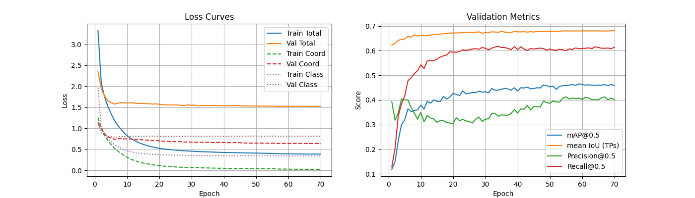
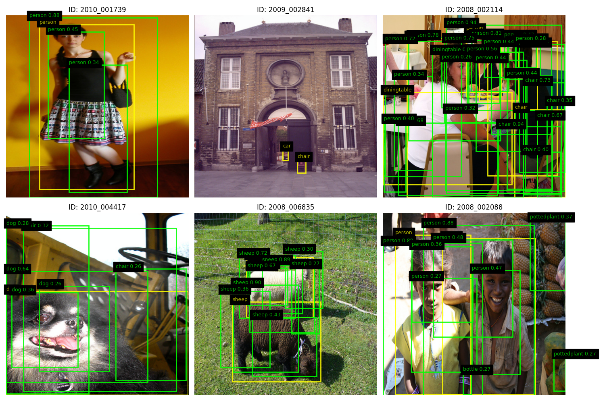
下面给出模型类的定义：
下面是重头戏，我们的损失函数。
代码比较长，因为我具体分析了蛮多细节，因此折叠了一下。
YOLO v1 loss 详细的实现
1 2 3 4 5 6 7 8 9 10 11 12 13 14 15 16 17 18 19 20 21 22 23 24 25 26 27 28 29 30 31 32 33 34 35 36 37 38 39 40 41 42 43 44 45 46 47 48 49 50 51 52 53 54 55 56 57 58 59 60 61 62 63 64 65 66 67 68 69 70 71 72 73 74 75 76 77 78 79 80 81 82 83 84 85 86 87 88 89 90 91 92 93 94 95 96 97 98 99 100 101 102 103 104 105 106 107 108 109 110 111 112 113 114 115 116 117 118 119 120 121 122 123 124 125 126 127 128 129 130 131 132 133 134 135 136 137 138 139 140 141 142 143 144 145 146 147 148 149 150 151 152 153 154 155 156 157 158 159 160 161 162 163 164 165 166 167 168 169 170 171 172 173 174 175 176 177 178 179 180 181 182 183 184 185 186 187 188 189 190 191 192 193 194 195 196 197 198 199 200 201 202 203 204 205 206 207 208 209 210 211 212 213 214 215 216 217 218 219 220 221 222 223 224 225 226 227 228 229 230 231 232 233 234 235 236 237 238 239 240 241 242 243 244 245 246 247 248 249 250 251 252 253 254 255 256 257 258 259 260 261 262 263 264 265 266 267 268 269 270 271 272 273 274 275 276 277 278 279 280 281 282 283 284 285 286 287 288 | |
推理与评估¶
唯一值得一提的就是推理时使用的 NMS 手段。由于打框的时候模型想提高召回（尤其在我们之前魔改过的 YOLO Loss 里面），就会给同一个目标打很多相互重叠的框，于是我们就需要对这些框进行筛选。
首先评判一个框好不好最佳标准是置信度 \(c\)，因此我们按置信度排序，最高的框就是质量最好的框。我们记录下来。接下来我们不能保留太多重叠的框，就丢弃和这个最佳框 IoU 大于某个阈值 NMS_IoU 的所有框。然后对剩下的框（不含那个最佳框）重复执行刚刚的排序——丢弃操作。最后记录下来的所有框就是筛选好的框了。
这叫做 Non-Max Suppression(NMS)，非极大值抑制。
其他的内容，请具体看代码吧。这里没有给 yolo_decode 函数，因为解码的部分在 YOLOV1Loss 类里面已经有呈现了。
利用 NMS 评估 mAP, P-R 等指标
1 2 3 4 5 6 7 8 9 10 11 12 13 14 15 16 17 18 19 20 21 22 23 24 25 26 27 28 29 30 31 32 33 34 35 36 37 38 39 40 41 42 43 44 45 46 47 48 49 50 51 52 53 54 55 56 57 58 59 60 61 62 63 64 65 66 67 68 69 70 71 72 73 74 75 76 77 78 79 80 81 82 83 84 85 86 87 88 89 90 91 92 93 94 95 96 97 98 99 100 101 102 103 104 105 106 107 108 109 110 111 112 113 114 115 116 117 118 119 120 121 122 123 124 125 126 127 128 129 130 131 132 133 134 135 136 137 138 139 140 141 142 143 144 145 146 147 148 149 150 151 152 153 154 155 156 157 158 159 160 161 162 163 164 165 166 167 168 169 170 171 172 173 174 175 176 177 178 179 180 181 182 183 184 185 186 187 188 189 190 191 192 193 194 195 196 197 198 199 200 201 202 203 204 205 206 207 208 209 210 211 212 213 214 215 216 217 218 219 220 221 222 223 224 225 226 227 228 | |
可视化¶
这里实现了通过摄像头视频流进行实时目标检测。
实时目标检测使用的代码
1 2 3 4 5 6 7 8 9 10 11 12 13 14 15 16 17 18 19 20 21 22 23 24 25 26 27 28 29 30 31 32 33 34 35 36 37 38 39 40 41 42 43 44 45 46 47 48 49 50 51 52 53 54 55 56 57 58 59 60 61 62 63 64 65 66 67 68 69 70 71 72 73 74 75 76 77 78 79 80 81 82 83 84 85 86 87 88 89 90 91 92 93 94 95 96 97 98 99 100 101 102 103 104 105 106 107 108 109 110 111 112 113 114 115 116 117 118 119 120 121 122 123 124 125 126 127 128 129 130 131 132 133 134 135 136 137 138 139 140 141 142 143 144 145 146 147 148 149 150 151 152 153 154 155 156 157 158 159 160 161 162 163 164 165 166 167 168 169 170 171 172 173 174 175 176 177 178 179 180 181 182 183 184 185 186 187 188 189 190 191 192 193 194 195 196 197 198 199 200 201 202 203 204 205 206 207 208 209 210 211 212 213 214 215 216 217 218 219 220 221 222 223 224 225 226 227 228 229 230 231 232 233 234 235 236 237 238 239 240 241 242 243 244 245 246 247 248 249 250 251 252 253 254 255 256 257 258 259 260 261 262 263 264 265 266 267 268 269 270 271 272 273 274 275 276 277 278 279 280 281 282 283 284 285 286 287 | |
最后在真实世界样本的检测效果如下：（帧率很低是由于笔记本没有独显导致只能在 CPU 上面推理）
 |
 |
 |
 |
 |
 |
📝 如果您需要引用本文
Yan Li. (Sep. 13, 2025). 图像语义分割和目标检测相关模型复现手记 [Blog post]. Retrieved from https://dicaeopolis.github.io/DNN/model-expr/S-and-D-models-replication
在 BibTeX 格式中：